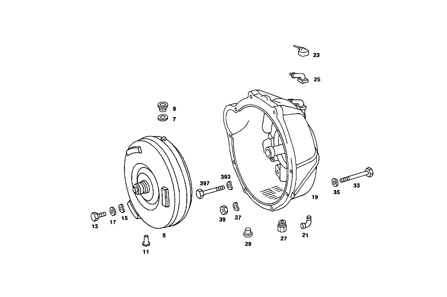

| № | Артикул | Название | Кол. | Примечание | Ограничение |
|---|---|---|---|---|---|
| 5 | A 123 250 01 02 | ПРЕОБРАЗОВАТЕЛЬ | - | ||
| 5 | A 722 250 16 02 | Гидротрансформатор | 1 | 270 MM | |
| 7 | N 007603 010100 | - Уплотнительное кольцо | 1 | 10X13.5 AL | |
| 9 | N 000908 010004 | - Резьбовая пробка | - | M10X1\-10.9 | |
| 9 | N 000000 000648 | - Резьбовая пробка | 1 | ||
| 11 | A 123 257 00 40 | ДЕРЖАТЕЛЬ | 1 | КАРТЕР ГИДРОТРАНСФОРМАТОРА | |
| 13 | N 000933 008325 | Винт | 6 | КП НА ДВИГАТЕЛЕ | |
| 15 | N 000137 008204 | Пружинная шайба | 6 | КП НА ДВИГАТЕЛЕ | |
| 17 | A 110 990 20 40 | ШАЙБА | 6 | КП НА ДВИГАТЕЛЕ | |
| 19 | A 115 250 77 05 | КОРПУС | 1 | [402] БОЛЬШЕ НЕ ПОСТАВЛЯЕТСЯ [073] FROM TRANSMISSION 102 016596 103 025558 104 004419 [076] FROM TRANSMISSION 105 014873 108 015329 110 009522 [219] UP TO TRANSMISSION 119 000678 ON 123 270 09 01 | |
| 23 | A 115 250 03 57 | - ВЕНТИЛЯЦИЯ | - | ||
| 23 | A 115 250 00 66 | - Вентиляционная трубка | 1 | с RUBBER CAP;REPAIR SIZE [055] UP TO TRANSMISSION 102 007615 103 012708 104 002477 105 007172 108 005428 110 003770 | |
| 25 | A 115 250 05 57 | - Вентиляция | 1 | [219] UP TO TRANSMISSION 119 000678 ON 123 270 09 01 [057] FROM TRANSMISSION 102 007616 103 012709 104 002478 105 007173 108 005429 110 003771 | |
| 27 | A 115 257 10 57 | - Резьбовое кольцо | 1 | ||
| 29 | N 000908 022010 | - Резьбовая пробка | 2 | ||
| 45 | A 116 270 00 90 | - Корпус | 1 | с PRIMARY PUMP | |
| 47 | A 100 277 17 50 | - втулка | 1 | ||
| 47 | A 116 277 03 50 | - ВТУЛКА | 1 | ||
| 49 | A 004 997 05 47 | - УПЛОТНИТ. КОЛЬЦО | 1 | ||
| 51 | A 100 277 18 50 | - ВТУЛКА | 1 | ||
| 51 | A 116 277 02 50 | - втулка | 1 | ||
| 53 | A 004 997 05 48 | - Уплотнительное кольцо | 1 | ||
| 55 | N 000931 008046 | - Винт | - | ||
| 55 | N 304017 008018 | - Винт с 6-гранной головкой | 4 | M8X35 | |
| 57 | N 000137 008204 | - Пружинная шайба | 4 | ||
| 59 | N 000625 016008 | - Шарикоподшипник | 1 | [402] БОЛЬШЕ НЕ ПОСТАВЛЯЕТСЯ | |
| 61 | A 115 270 21 50 | - втулка | 1 | ||
| 63 | A 115 272 06 55 | - УПЛОТНИТ. КОЛЬЦО | - | ||
| 63 | A 316 272 04 55 | - Уплотнительное кольцо | 4 | [402] БОЛЬШЕ НЕ ПОСТАВЛЯЕТСЯ | |
| 65 | A 115 272 07 92 | - Резиновый наконечник | 1 | ||
| 67 | A 115 270 95 20 | - ФЛАНЕЦ | 1 | [402] БОЛЬШЕ НЕ ПОСТАВЛЯЕТСЯ [233] FROM TRANSMISSION: 112 024797 112 005087 ON 123 270 11 01 117 004120 118 016723 119 000779 ON 123 270 17 01 | |
| 69 | A 115 272 12 92 | - МАНЖЕТА | 1 | ||
| 71 | A 115 272 14 92 | - Уплотнительное кольцо | 1 | ||
| 73 | A 115 272 02 31 | - ПОРШЕНЬ | 1 | [402] БОЛЬШЕ НЕ ПОСТАВЛЯЕТСЯ [231] 006804, BEI 114 270 27 01, BUND 112 005086 ON 123 270 11 01 117 004119 118 016722 119 000778 ON 123 270 17 01 | |
| 75 | A 115 993 52 01 | - пружина | 28 | ||
| 77 | A 115 270 04 41 | - Тарелка пружины | 1 | ||
| 79 | A 115 994 08 35 | - Пруж. стопорное кольцо | 1 | ||
| 81 | A 000 994 14 40 | - Пруж. стопорное кольцо | 1 | ||
| 83 | A 006 981 42 10 | - ПОДШИПНИК ИГОЛЬЧАТЫЙ | 1 | ||
| 83 | A 004 981 70 10 | - ПОДШИПНИК ИГОЛЬЧАТЫЙ | 1 | [402] БОЛЬШЕ НЕ ПОСТАВЛЯЕТСЯ | |
| 85 | A 112 272 03 25 | - Диск | 3 | 2.1 MM | |
| 87 | A 109 272 19 26 | - Диск | 1 | 5.0 MM | |
| 93 | A 109 272 23 26 | - Диск | 3 | ПО НЕОБХОДИМОСТИ 5.0 MM | |
| 93 | A 109 272 22 26 | - Диск | 3 | ПО НЕОБХОДИМОСТИ 4.5 MM | |
| 95 | A 115 272 13 73 | - Кольцо | 1 | 153 MM [333] FROM TRANSMISSION 117 000001 ON 123 270 23 01 | |
| 97 | A 115 270 61 43 | - ВОДИЛО ПЛАНЕТ. ПЕРЕДАЧИ | 1 | [015] FROM TRANSMISSION 101 001466 | |
| 99 | A 004 981 21 10 | - ПОДШИПНИК ИГОЛЬЧАТЫЙ | - | ||
| 99 | A 000 981 14 11 | - Игольчатый подшипник | 1 | ||
| 101 | A 115 272 33 62 | - Упорная шайба | 1 | ||
| 103 | A 115 272 02 73 | Кольцо | 1 | 130 MM [015] FROM TRANSMISSION 101 001466 | |
| 105 | A 112 994 07 35 | - Пруж. стопорное кольцо | 1 | 125 MM [015] FROM TRANSMISSION 101 001466 | |
| 107 | A 115 272 34 62 | - Упорная шайба | 1 | ||
| 109 | A 115 271 17 52 | - Компенсационная шайба | 1 | ПО НЕОБХОДИМОСТИ 0.1 MM | |
| 109 | A 115 271 18 52 | - Компенсационная шайба | 1 | ПО НЕОБХОДИМОСТИ 0.2 MM | |
| 109 | A 115 271 19 52 | - Дистанционная шайба | 1 | ПО НЕОБХОДИМОСТИ 0.5mm [402] БОЛЬШЕ НЕ ПОСТАВЛЯЕТСЯ | |
| 111 | A 115 271 21 52 | - Компенсационная шайба | 1 | ПО НЕОБХОДИМОСТИ 0.1 MM | |
| 111 | A 115 271 22 52 | - Дистанционная шайба | 1 | ПО НЕОБХОДИМОСТИ 0.2 MM [402] БОЛЬШЕ НЕ ПОСТАВЛЯЕТСЯ | |
| 111 | A 115 271 23 52 | - Компенсационная шайба | 1 | ПО НЕОБХОДИМОСТИ 0.5mm | |
| 113 | A 115 270 58 43 | - ВОДИЛО ПЛАНЕТ. ПЕРЕДАЧИ | 1 | [015] FROM TRANSMISSION 101 001466 | |
| 115 | A 115 272 04 73 | - Кольцо | 1 | 156 MM | |
| 117 | A 109 272 18 45 | - Фланец | 1 | ||
| 119 | A 115 272 22 31 | - ПОРШЕНЬ | 1 | [402] БОЛЬШЕ НЕ ПОСТАВЛЯЕТСЯ [135] UP TO TRANSMISSION 108 029328 109 020131 110 022229 | |
| 119 | A 115 272 24 31 | - ПОРШЕНЬ | 1 | [402] БОЛЬШЕ НЕ ПОСТАВЛЯЕТСЯ [137] FROM TRANSMISSION 108 029329 109 020132 110 022230 | |
| 123 | A 109 272 03 92 | - МАНЖЕТА | 1 | ||
| 123 | A 115 272 13 92 | - МАНЖЕТА | 1 | ||
| 123 | A 115 272 16 92 | - Манжета | 1 | ||
| 125 | A 109 272 10 92 | - МАНЖЕТА | 1 | ||
| 127 | A 115 272 54 24 | - ОБОЙМА ФРИКЦ. ДИСКОВ | 1 | [402] БОЛЬШЕ НЕ ПОСТАВЛЯЕТСЯ [135] UP TO TRANSMISSION 108 029328 109 020131 110 022229 | |
| 129 | A 115 272 04 73 | - Кольцо | 1 | 156 MM | |
| 131 | A 115 272 00 25 | - Диск | 3 | ПО НЕОБХОДИМОСТИ 2.1 MM [135] UP TO TRANSMISSION 108 029328 109 020131 110 022229 | |
| 133 | A 109 272 23 26 | - Диск | 2 | ПО НЕОБХОДИМОСТИ 5.0 MM | |
| 133 | A 109 272 22 26 | - Диск | 2 | ПО НЕОБХОДИМОСТИ 4.5 MM | |
| 135 | A 109 272 15 26 | - Диск | 1 | 2.0 MM [333] FROM TRANSMISSION 117 000001 ON 123 270 23 01 | |
| 137 | A 109 272 21 26 | - Диск | 1 | ПО НЕОБХОДИМОСТИ 5.0 MM [135] UP TO TRANSMISSION 108 029328 109 020131 110 022229 | |
| 139 | A 115 272 13 73 | - Кольцо | 1 | 153 MM [333] FROM TRANSMISSION 117 000001 ON 123 270 23 01 | |
| 141 | A 115 993 41 03 | - Нажимная пружина | 16 | [135] UP TO TRANSMISSION 108 029328 109 020131 110 022229 | |
| 143 | A 116 272 00 67 | - Направляющее кольцо | 1 | [135] UP TO TRANSMISSION 108 029328 109 020131 110 022229 | |
| 145 | A 002 981 31 10 | - Игольчатый подшипник | 1 | [402] БОЛЬШЕ НЕ ПОСТАВЛЯЕТСЯ | |
| 147 | A 115 270 56 25 | - ПРИВОДНОЙ ВАЛ | 1 | [135] UP TO TRANSMISSION 108 029328 109 020131 110 022229 | |
| 149 | A 002 981 32 10 | - Сепаратор иг. подшипника | 1 | ||
| 151 | A 115 272 34 62 | - Упорная шайба | 1 | ||
| 153 | A 002 994 26 41 | - Стопорное кольцо | 1 | ||
| 155 | A 002 981 30 10 | - Игольчатый подшипник | 1 | ||
| 157 | A 115 272 02 73 | - Кольцо | 1 | 130 MM | |
| 159 | A 112 994 07 35 | - Пруж. стопорное кольцо | 1 | 125 MM | |
| 161 | A 005 981 81 10 | - Сепаратор иг. подшипника | 1 | ||
| 163 | A 115 270 55 25 | - ПРИВОДНОЙ ВАЛ | 1 | ||
| 165 | A 115 270 47 43 | - ВОДИЛО ПЛАНЕТ. ПЕРЕДАЧИ | 1 | ||
| 167 | A 007 981 39 10 | - Игольчатый подшипник | 1 | ||
| 169 | A 004 981 40 10 | - Сепаратор иг. подшипника | 1 | ||
| 171 | A 115 272 37 62 | - Упорная шайба | 1 | ||
| 173 | A 001 981 18 25 | - Рад. шарикоподшипник | 1 | ||
| 175 | A 115 272 49 62 | - Диск | 1 | ||
| 177 | A 100 272 04 55 | - Уплотнительное кольцо | 1 | ПРИВОДНОЙ ВАЛ | |
| 179 | A 115 272 45 62 | - Упорная шайба | 1 | ||
| 181 | A 115 272 24 45 | - Опорный фланец | 1 | ||
| 183 | N 007987 006130 | - БОЛТ | 3 | ||
| 185 | A 115 271 13 52 | - Компенсационная шайба | 1 | ПО НЕОБХОДИМОСТИ 0.1 MM | |
| 185 | A 115 271 14 52 | - Компенсационная шайба | 1 | ПО НЕОБХОДИМОСТИ 0.2 MM | |
| 185 | A 115 271 15 52 | - Компенсационная шайба | 1 | ПО НЕОБХОДИМОСТИ 0.3 MM | |
| 187 | A 000 304 11 90 | - Корпус | 1 | (МАГНИТ. КАТУШКА) TO 000 304 08 90 | |
| 187 | A 000 304 25 90 | - ПЕРЕКЛ.МАГНИТ | 1 | (МАГНИТ. КАТУШКА) TO 000 304 16 90 | |
| 189 | A 000 304 12 90 | - ПЕРЕКЛ.МАГНИТ | 1 | (РАМА МАГНИТА) TO 000 304 08 90 | |
| 189 | A 000 304 24 90 | - ПЕРЕКЛ.МАГНИТ | 1 | (РАМА МАГНИТА) TO 000 304 16 90 | |
| 191 | A 008 997 30 48 | - Уплотнительное кольцо | 1 | ||
| 193 | A 010 997 77 45 | - Уплотнительное кольцо | 1 | ||
| 195 | A 001 997 35 48 | - Уплотнительное кольцо | 1 | ||
| 197 | A 115 304 01 60 | - Уплотнительное кольцо | 1 | ||
| 199 | A 115 270 76 11 | - КОРПУС КП | 1 | [402] БОЛЬШЕ НЕ ПОСТАВЛЯЕТСЯ [219] UP TO TRANSMISSION 119 000678 ON 123 270 09 01 [314] FROM TRANSMISSION 117 021284 ON 123 270 12 01 | |
| 201 | A 115 997 06 30 | - Резьбовая пробка | 1 | ||
| 203 | N 007603 008105 | - Уплотнительное кольцо | 1 | ||
| 205 | A 006 997 61 46 | - Уплотнительное кольцо | 1 | ||
| 207 | A 115 272 11 92 | - Уплотнительное кольцо | 1 | ||
| 213 | A 115 270 08 68 | - НАПРАВЛ. ТРУБКА | 1 | [016] AGAINST SQUEALING OF TRANSMISSION | |
| 215 | A 115 277 15 40 | - Держатель | 1 | СВЕРХУ | |
| 218 | A 115 270 46 07 | - КОРПУС ЗОЛОТНИКА | 1 | ДАТЧИК МОДУЛИРУЮЩЕГО ДАВЛЕНИЯ | |
| 219 | A 115 993 20 10 | - пружина | 2 | [402] БОЛЬШЕ НЕ ПОСТАВЛЯЕТСЯ | |
| 221 | N 000931 006115 | - Винт | - | ||
| 221 | N 000933 006151 | - Винт | 2 | ||
| 223 | N 000912 006063 | - Цилиндрич. винт | - | ||
| 223 | N 000912 006170 | - Цилиндрич. винт | 1 | ||
| 225 | N 000137 006204 | - Пружинная шайба | 3 | ||
| 227 | A 109 271 00 80 | - ПРОКЛАДКА УПЛОТНИТЕЛЬНАЯ | - | ||
| 227 | A 109 271 01 80 | - уплотнение | 1 | ||
| 227 | A 115 271 14 80 | - ПРОКЛАДКА УПЛОТНИТЕЛЬНАЯ | - | ||
| 227 | A 115 271 17 80 | - ПРОКЛАДКА УПЛОТНИТЕЛЬНАЯ | 1 | ||
| 231 | A 000 545 42 06 | - Переключатель | 1 | ПЕРЕКЛЮЧАТЕЛЬ БЛОКИРОВКИ ПУСКА ДВИГАТЕЛЯ И ФОНАРЕЙ ЗАДНЕГО ХОДА | |
| 231 | A 000 545 46 06 | - Переключатель | 1 | ПЕРЕКЛЮЧАТЕЛЬ БЛОКИРОВКИ ПУСКА ДВИГАТЕЛЯ И ФОНАРЕЙ ЗАДНЕГО ХОДА | |
| 235 | N 000137 005203 | - Пружинная шайба | 2 | ||
| 239 | N 000933 005081 | - Винт | 2 | ||
| 241 | A 115 278 25 20 | - Рычаг селектора диапазон. | 1 | [402] БОЛЬШЕ НЕ ПОСТАВЛЯЕТСЯ | |
| 245 | A 115 545 01 42 | - ПОВОДОК | 1 | ||
| 247 | N 000084 004174 | - Винт | 1 | ||
| 249 | N 000137 004202 | - Пружинная шайба | 1 | ||
| 251 | A 115 278 16 10 | - Вал | 1 | ||
| 259 | N 000931 006095 | - Винт | 1 | РЫЧАГ СЕЛЕКТОРА НА ВАЛУ | |
| 261 | N 000137 006205 | - Пружинная шайба | 1 | РЫЧАГ СЕЛЕКТОРА НА ВАЛУ | |
| 263 | N 000934 006013 | - Гайка | - | ||
| 263 | N 304032 006008 | - Шестигранная гайка | 1 | РЫЧАГ СЕЛЕКТОРА НА ВАЛУ | |
| 271 | A 115 270 04 57 | - Пластина фиксации сел.АКП | 1 | [018] FROM TRANSMISSION 101 006161 | |
| 273 | N 006912 006006 | - Винт | 1 | ||
| 275 | N 000137 006204 | - Пружинная шайба | 1 | ||
| 277 | A 116 270 03 89 | - Нажимной элемент | 1 | B1 [025] FROM TRANSMISSION 101 004076 | |
| 279 | A 109 270 11 89 | - Нажимной элемент | 1 | B 2 [025] FROM TRANSMISSION 101 004076 | |
| 281 | A 126 277 11 58 | - Крепление упл. кольца | - | [414] СТАРУЮ ДЕТАЛЬ УСТАНАВЛИВАТЬ БОЛЬШЕ НЕ РАЗРЕШАЕТСЯ | |
| 281 | A 140 277 01 51 | - Проставочное кольцо | 2 | [025] FROM TRANSMISSION 101 004076 | |
| 283 | A 010 997 08 45 | - УПЛОТНИТ. КОЛЬЦО | - | ||
| 283 | A 016 997 34 48 | - Кольцевая прокладка | 2 | ||
| 285 | A 115 993 00 22 | - пружина | 1 | [402] БОЛЬШЕ НЕ ПОСТАВЛЯЕТСЯ | |
| 287 | A 109 277 02 75 | - ШТИФТ | 2 | ПО НЕОБХОДИМОСТИ 23 MM | |
| 287 | A 109 277 03 75 | - Нажимной штифт | 2 | ПО НЕОБХОДИМОСТИ 24mm | |
| 287 | A 109 277 04 75 | - Нажимной штифт | 2 | ПО НЕОБХОДИМОСТИ 25 MM | |
| 287 | A 109 277 05 75 | - Нажимной штифт | 2 | ПО НЕОБХОДИМОСТИ 26 MM | |
| 289 | A 115 277 02 74 | - Палец | 1 | ||
| 291 | A 115 277 04 24 | - РЫЧАГ | 1 | ||
| 293 | A 115 277 53 75 | - Нажимной штифт | 2 | ||
| 295 | A 115 993 02 25 | - пружина | 1 | ||
| 297 | A 115 277 17 71 | - болт | 1 | ||
| 299 | A 115 990 04 51 | - гайка | 1 | ||
| 301 | A 115 270 61 32 | - Поршень | 1 | 88 MM | |
| 303 | A 115 272 08 92 | - Уплотнительное кольцо | 1 | ||
| 305 | A 115 994 17 35 | - Пруж. стопорное кольцо | 1 | ||
| 307 | A 115 993 18 05 | - пружина | 1 | [402] БОЛЬШЕ НЕ ПОСТАВЛЯЕТСЯ | |
| 309 | A 115 277 37 03 | - Крышка | 1 | ||
| 313 | A 008 997 35 45 | - Уплотнительное кольцо | 1 | ||
| 315 | A 115 994 30 35 | - СТОПОРН. КОЛЬЦО | 1 | [402] БОЛЬШЕ НЕ ПОСТАВЛЯЕТСЯ | |
| 317 | A 115 270 24 89 | - Клапан заправочный | 1 | ||
| 319 | A 002 997 21 48 | - Уплотнительное кольцо | 1 | ||
| 321 | A 094 990 89 07 | - Уплотнительное кольцо | 1 | 16X22 | |
| 323 | A 115 270 14 59 | - Рычаг | 1 | [314] FROM TRANSMISSION 117 021284 ON 123 270 12 01 | |
| 329 | A 115 990 17 40 | - Диск | 1 | [314] FROM TRANSMISSION 117 021284 ON 123 270 12 01 | |
| 331 | N 006799 009002 | - Стопорная шайба | 1 | [314] FROM TRANSMISSION 117 021284 ON 123 270 12 01 | |
| 333 | A 115 270 08 59 | - Рычаг | 1 | [314] FROM TRANSMISSION 117 021284 ON 123 270 12 01 | |
| 335 | N 000933 006123 | - Винт | 1 | [314] FROM TRANSMISSION 117 021284 ON 123 270 12 01 | |
| 337 | N 000137 006204 | - Пружинная шайба | 1 | [314] FROM TRANSMISSION 117 021284 ON 123 270 12 01 | |
| 339 | N 000934 006013 | - Гайка | - | ||
| 339 | N 304032 006008 | - Шестигранная гайка | 1 | [314] FROM TRANSMISSION 117 021284 ON 123 270 12 01 | |
| 341 | A 116 270 03 62 | - ЛЕНТА ТОРМОЗНАЯ | - | ||
| 341 | A 116 270 17 62 | - Тормозная лента | 1 | ПЕРЕДАЧА ЗАДНЕГО ХОДА | |
| 343 | A 115 993 54 03 | - пружина | 1 | [402] БОЛЬШЕ НЕ ПОСТАВЛЯЕТСЯ | |
| 345 | A 115 993 55 03 | - пружина | 1 | [402] БОЛЬШЕ НЕ ПОСТАВЛЯЕТСЯ | |
| 347 | A 115 270 59 32 | - ПОРШЕНЬ | 1 | 62 MM | |
| 349 | A 115 272 03 92 | - Уплотнительное кольцо | 1 | ||
| 363 | A 115 277 19 03 | - КРЫШКА | 1 | ||
| 367 | A 010 997 59 45 | - Уплотнительное кольцо | 1 | ||
| 369 | A 115 994 14 35 | - Пруж. стопорное кольцо | 1 | ||
| 371 | A 115 270 71 32 | - Поршень | 1 | 88 MM [697] ДЕТАЛЬ ПОСТАВЛЯЕТСЯ ТОЛЬКО/ИЛИ ТАКЖЕ КАК ЗАП.ЧАСТЬ | |
| 373 | A 115 277 02 55 | - Уплотнительное кольцо | 1 | ||
| 375 | A 115 993 23 05 | - пружина | 1 | [402] БОЛЬШЕ НЕ ПОСТАВЛЯЕТСЯ [144] FROM TRANSMISSION 102 031046 103 046349 104 007159 105 026573 108 028379 109 019782 110 021501 112 000538 117,118,119 000021 | |
| 377 | A 115 277 16 77 | - НАПРАВЛ. ЭЛЕМЕНТ | 1 | [402] БОЛЬШЕ НЕ ПОСТАВЛЯЕТСЯ [144] FROM TRANSMISSION 102 031046 103 046349 104 007159 105 026573 108 028379 109 019782 110 021501 112 000538 117,118,119 000021 | |
| 379 | A 115 277 37 03 | - Крышка | 1 | ||
| 381 | A 115 994 30 35 | - СТОПОРН. КОЛЬЦО | 1 | [402] БОЛЬШЕ НЕ ПОСТАВЛЯЕТСЯ | |
| 385 | A 008 997 35 45 | - Уплотнительное кольцо | 1 | ||
| 387 | A 115 270 59 62 | - ЛЕНТА ТОРМОЗНАЯ | - | ||
| 387 | A 115 270 73 62 | - Тормозная лента | 1 | B 2 | |
| 389 | A 115 270 63 62 | - ЛЕНТА ТОРМОЗНАЯ | - | ||
| 389 | A 115 270 71 62 | - Тормозная лента | 1 | B 1 [010] FROM TRANSMISSION 101 000061 | |
| 391 | N 000137 008204 | - Пружинная шайба | 11 | ||
| 395 | N 000931 008244 | - Винт | 11 | ||
| 399 | A 115 277 26 80 | - ПРОКЛАДКА УПЛОТНИТЕЛЬНАЯ | - | ||
| 399 | A 115 277 33 80 | - Уплотнение | 1 | [219] UP TO TRANSMISSION 119 000678 ON 123 270 09 01 | |
| 403 | A 115 272 01 17 | - Шестерня | - | ||
| 403 | A 722 272 00 17 | - ШЕСТЕРНЯ | 1 | [402] БОЛЬШЕ НЕ ПОСТАВЛЯЕТСЯ | |
| 405 | A 115 278 07 74 | - Палец | 1 | ||
| 407 | A 000 994 42 41 | - Стопорное кольцо | 1 | ||
| 409 | A 115 278 02 21 | - Собачка | 1 | ||
| 411 | A 115 993 02 22 | - пружина | 1 | ||
| 413 | A 115 270 06 65 | - Тяга | 1 | ||
| 415 | A 115 278 05 17 | - Ролик | 1 | ПОДВИЖН. [223] 006804, BEI 114 270 27 01, BUND 112 001686 ON 123 270 11 01 117 003055 118 010321 119 000478 ON 123 270 17 01 | |
| 417 | A 115 990 21 40 | - ШАЙБА | 1 | [223] 006804, BEI 114 270 27 01, BUND 112 001686 ON 123 270 11 01 117 003055 118 010321 119 000478 ON 123 270 17 01 | |
| 419 | A 115 278 08 74 | - Палец | 1 | ||
| 421 | A 000 981 51 87 | - Игла подшипника | 23 | ||
| 423 | A 115 278 04 17 | - Ролик | 1 | НЕПОДВИЖН. СТОЯЩ. | |
| 425 | A 094 990 61 07 | - Стопорная шайба | 1 | ||
| 427 | A 115 278 00 62 | - Упорная шайба | 1 | ||
| 429 | A 115 270 04 78 | - Листовая рессора | 1 | ||
| 431 | A 115 278 04 40 | - Держатель | 1 | ||
| 433 | N 000137 006204 | - Пружинная шайба | 1 | ||
| 435 | N 000933 006102 | - Винт | - | ||
| 435 | N 304017 006016 | - Винт с 6-гранной головкой | 1 | M6X16 | |
| 437 | A 116 270 03 74 | - Регулятор | 1 | [402] БОЛЬШЕ НЕ ПОСТАВЛЯЕТСЯ | |
| 439 | A 115 272 03 55 | - УПЛОТНИТ. КОЛЬЦО | 3 | ||
| 439 | A 115 272 13 55 | - Уплотнительное кольцо | 3 | ||
| 441 | A 115 270 00 98 | - Масляный фильтр | 1 | ||
| 443 | A 115 277 08 58 | - Эксцентриковая шайба | 1 | ||
| 445 | A 115 270 03 42 | - Ведущее колесо | 1 | ||
| 447 | A 115 993 04 26 | - Тарельчатая пружина | 1 | ||
| 449 | A 123 270 17 11 | - Корпус коробки передач | 1 | [026] FROM TRANSMISSION 101 000031 | |
| 451 | A 115 997 01 03 | - Пробка | 1 | ||
| 453 | A 115 997 03 03 | - Пробка | 1 | [229] 006804, BEI 114 270 27 01, BUND 112 001886 ON 123 270 11 01 117 003055 118 010448 119 000478 ON 123 270 17 01 | |
| 455 | A 115 993 38 03 | - Нажимная пружина | 1 | ||
| 457 | A 115 277 62 75 | - Нажимной штифт | 1 | ||
| 459 | A 000 981 81 85 | - Шар | 1 | ||
| 461 | A 115 997 01 30 | - ЗАГЛУШКА РЕЗЬБОВАЯ | 1 | [402] БОЛЬШЕ НЕ ПОСТАВЛЯЕТСЯ | |
| 463 | N 007603 010100 | - Уплотнительное кольцо | 1 | 10X13.5 AL | |
| 473 | N 007603 012104 | - Уплотнительное кольцо | 1 | ||
| 475 | N 007604 012102 | - Резьбовая пробка | 1 | ||
| 479 | N 007603 008105 | - Уплотнительное кольцо | 2 | ||
| 481 | A 115 997 06 30 | - Резьбовая пробка | 2 | ||
| 483 | A 114 991 01 29 | - Шар | 1 | 10mm | |
| 485 | A 115 993 13 02 | - пружина | 1 | [402] БОЛЬШЕ НЕ ПОСТАВЛЯЕТСЯ | |
| 487 | N 007603 018100 | - Уплотнительное кольцо | 1 | ||
| 489 | A 115 997 03 30 | - Резьбовая пробка | 1 | ||
| 491 | A 115 270 51 32 | - Поршень | 1 | ПОРШНЕВОЙ НАСОС | |
| 493 | A 009 997 09 45 | - Уплотнительное кольцо | 1 | ||
| 495 | A 115 277 16 71 | - болт | 1 | ||
| 497 | N 000137 006204 | - Пружинная шайба | 1 | ||
| 499 | N 000625 900201 | - Шарикоподшипник | 1 | ||
| 501 | N 000472 062000 | - Стопорное кольцо | 1 | ||
| 503 | A 008 997 92 46 | - Сальник | 1 | [451] ОБЪЁМЫ ТО И ТРАНСПОРТНЫЕ ПОВРЕЖДЕНИЯ | |
| 507 | A 115 993 34 04 | - пружина | 1 | [402] БОЛЬШЕ НЕ ПОСТАВЛЯЕТСЯ | |
| 509 | A 115 277 41 31 | - Поршень | 1 | ||
| 511 | A 115 277 27 40 | - ДЕРЖАТЕЛЬ | 1 | ||
| 513 | N 007985 005127 | - Винт | - | ||
| 513 | N 007985 005504 | - Винт | 1 | M5X12 | |
| 515 | N 000137 008204 | - Пружинная шайба | 10 | ||
| 517 | N 000933 008150 | - Винт | - | ||
| 517 | N 304017 008018 | - Винт с 6-гранной головкой | 10 | M8X35 | |
| 519 | A 115 277 50 38 | - Поршень | 1 | [026] FROM TRANSMISSION 101 000031 | |
| 521 | A 115 993 05 04 | - пружина | 1 | [402] БОЛЬШЕ НЕ ПОСТАВЛЯЕТСЯ | |
| 523 | A 115 277 97 31 | - ПОРШЕНЬ | 1 | РЕГУЛИРУЮЩИЙ ЗОЛОТНИК МОДУЛИРУЮЩЕГО ДАВЛЕНИЯ [402] БОЛЬШЕ НЕ ПОСТАВЛЯЕТСЯ | |
| 529 | A 000 270 01 79 | - Вакуумная камера | 1 | ||
| 541 | A 115 277 29 75 | - Нажимной штифт | 1 | ПО НЕОБХОДИМОСТИ 39.65 MM [312] FROM TRANSMISSION 117 000001 ON 123 270 23 01 | |
| 541 | A 115 277 30 75 | - Нажимной штифт | 1 | ПО НЕОБХОДИМОСТИ 40.15 MM [312] FROM TRANSMISSION 117 000001 ON 123 270 23 01 | |
| 541 | A 123 277 02 75 | - Нажимной штифт | 1 | ПО НЕОБХОДИМОСТИ 39.15 MM [312] FROM TRANSMISSION 117 000001 ON 123 270 23 01 | |
| 543 | A 115 270 03 27 | - Ведущее колесо | 1 | ||
| 545 | A 115 274 00 60 | - УПЛОТНИТ. КОЛЬЦО | 1 | [402] БОЛЬШЕ НЕ ПОСТАВЛЯЕТСЯ | |
| 545 | A 007 997 73 46 | - Уплотнительное кольцо | 1 | ||
| 547 | A 115 274 06 28 | - Корпус | 1 | ||
| 549 | A 005 997 52 45 | - Уплотнительное кольцо | 1 | ||
| 555 | A 115 990 39 01 | - БОЛТ | 1 | ||
| 557 | N 000137 006204 | - Пружинная шайба | 1 | ||
| 559 | A 115 993 84 02 | - пружина | 1 | [402] БОЛЬШЕ НЕ ПОСТАВЛЯЕТСЯ | |
| 561 | A 115 270 06 72 | - Пробка | 1 | ||
| 563 | A 006 997 41 45 | - Уплотнительное кольцо | - | ||
| 563 | A 007 997 14 48 | - Уплотнительное кольцо | - | ||
| 563 | A 018 997 19 48 | - Кольцевая прокладка | 1 | ||
| 565 | A 123 262 04 45 | - ФЛАНЕЦ | - | ||
| 565 | A 124 353 07 45 | - ФЛАНЕЦ | - | ||
| 565 | A 124 353 17 45 | - Фланец шарнира | 1 | [455] С АСБЕСТОМ | |
| 567 | A 123 990 00 60 | - гайка | 1 | ||
| 569 | A 116 272 00 76 | - Диск | 1 | ||
| 571 | A 115 270 52 07 | - Корпус перекл. золотника | 1 | ||
| 573 | A 115 277 20 01 | - КОРПУС ЗОЛОТНИКА | 1 | (ПЛАСТИНА МАСЛ. РАСПРЕДЕЛИТ.) [402] БОЛЬШЕ НЕ ПОСТАВЛЯЕТСЯ | |
| 575 | A 115 277 28 36 | - Тарелка клапана | 1 | ||
| 577 | A 115 993 15 05 | - пружина | 2 | ||
| 579 | A 115 277 26 36 | - Тарелка клапана | 1 | ||
| 581 | A 109 993 17 01 | - Нажимная пружина | 1 | ||
| 583 | A 116 277 01 14 | - Металлическая прокладка | 1 | ||
| 585 | A 116 277 04 80 | - ПРОКЛАДКА УПЛОТНИТЕЛЬНАЯ | - | ||
| 585 | A 116 277 08 80 | - Уплотнение | 1 | ||
| 587 | A 115 277 23 36 | - Тарелка клапана | 1 | ПЕРЕДАЧА ЗАДНЕГО ХОДА | |
| 589 | A 115 277 08 83 | - ЩИТОК ЗАКРЫВ. | 1 | [402] БОЛЬШЕ НЕ ПОСТАВЛЯЕТСЯ | |
| 591 | A 115 277 12 80 | - ПРОКЛАДКА УПЛОТНИТЕЛЬНАЯ | - | ||
| 591 | A 115 277 32 80 | - Уплотнение | 1 | ||
| 593 | A 094 990 26 05 | - Винт | 1 | ||
| 595 | N 005401 305500 | - Шар | 2 | 5.5 MM | |
| 597 | A 115 277 40 29 | - Переключающий золотник | 1 | ||
| 599 | A 116 993 70 01 | - пружина | 3 | [280] UP TO TRANSMISSION 117: 007999 ON 123 270 06 01 | |
| 601 | A 115 270 02 98 | - Масляный фильтр | 1 | ||
| 603 | A 115 277 19 40 | - ДЕРЖАТЕЛЬ | 1 | [402] БОЛЬШЕ НЕ ПОСТАВЛЯЕТСЯ | |
| 605 | A 094 990 26 05 | - Винт | 14 | ||
| 607 | N 005401 305500 | - Шар | 7 | 5.5 MM | |
| 609 | A 116 277 00 75 | - Нажимной штифт | 1 | ||
| 611 | A 116 993 69 01 | - ПРУЖИНА | 1 | ПЕРЕКЛЮЧ. ЗОЛОТНИК B 2 | |
| 613 | A 115 270 04 70 | - Регулирующий золотник | 1 | ||
| 615 | A 115 277 25 36 | - Тарелка клапана | 1 | ||
| 617 | A 115 993 28 02 | - пружина | 1 | [402] БОЛЬШЕ НЕ ПОСТАВЛЯЕТСЯ | |
| 619 | A 115 991 01 60 | - ШТИФТ | 1 | ||
| 625 | A 116 277 02 14 | - Металлическая прокладка | 1 | [402] БОЛЬШЕ НЕ ПОСТАВЛЯЕТСЯ | |
| 627 | A 115 277 11 83 | - ЩИТОК ЗАКРЫВ. | 1 | [402] БОЛЬШЕ НЕ ПОСТАВЛЯЕТСЯ | |
| 629 | A 115 277 18 80 | - ПРОКЛАДКА УПЛОТНИТЕЛЬНАЯ | - | ||
| 629 | A 115 277 28 80 | - уплотнение | 1 | ||
| 631 | A 094 990 26 05 | - Винт | 3 | ||
| 633 | A 115 277 06 74 | - БОЛТ | 6 | [402] БОЛЬШЕ НЕ ПОСТАВЛЯЕТСЯ [280] UP TO TRANSMISSION 117: 007999 ON 123 270 06 01 | |
| 635 | A 115 277 06 73 | - предохранитель | 6 | ||
| 637 | N 005401 305500 | - Шар | 1 | 5.5 MM | |
| 639 | A 115 993 97 03 | - пружина | 1 | [402] БОЛЬШЕ НЕ ПОСТАВЛЯЕТСЯ | |
| 641 | A 114 991 02 29 | - Шар | 2 | 7.0 MM [402] БОЛЬШЕ НЕ ПОСТАВЛЯЕТСЯ | |
| 643 | N 000931 006191 | - Винт | 10 | ПЛАСТИНА РАСПРЕДЕЛЕН.МАСЛА НА КОРПУСЕ ЗОЛОТНИКА ВКЛЮЧ. | |
| 645 | N 000931 006055 | - Винт | 2 | ПЛАСТИНА РАСПРЕДЕЛЕН.МАСЛА НА КОРПУСЕ ЗОЛОТНИКА ВКЛЮЧ. | |
| 647 | N 000137 006204 | - Пружинная шайба | 12 | ПЛАСТИНА РАСПРЕДЕЛЕН.МАСЛА НА КОРПУСЕ ЗОЛОТНИКА ВКЛЮЧ. | |
| 649 | N 900421 006001 | - Резьбовая вставка | NB | ||
| 649 | N 900421 005000 | - Резьбовая вставка | NB | ||
| 651 | A 115 270 10 68 | - Вставная трубка | 2 | ||
| 653 | A 115 277 33 50 | - втулка | 4 | ||
| 655 | A 115 277 28 40 | - Держатель | 2 | ||
| 657 | N 000933 008116 | - Винт | - | M8X28\-8.8 | |
| 657 | N 000933 008337 | - Винт | 11 | КОРПУС ЗОЛОТН. ПЕРЕКЛЮЧ. НА КП | |
| 659 | N 000137 008204 | - Пружинная шайба | 11 | КОРПУС ЗОЛОТН. ПЕРЕКЛЮЧ. НА КП | |
| 661 | A 115 270 03 98 | - Масляный фильтр | 1 | [271] UP TO CHASSIS: 112:116.024 097045 112:123.033 030855 112:123.053 003471 NOT FOR 123.093 | |
| 671 | N 914026 005110 | - Винт с неспадающей шайбой | 2 | МАСЛ.ФИЛЬТР НА КОРПУСЕ ЗОЛОТНИКА ВКЛЮЧ. [271] UP TO CHASSIS: 112:116.024 097045 112:123.033 030855 112:123.053 003471 NOT FOR 123.093 | |
| 675 | A 115 270 00 12 | - Поддон масляный | 1 | [035] UP TO CHASSIS 105: 114.015 209060 108: 115.117 008955 110: 115.017 006304 | |
| 675 | A 115 270 06 12 | - Поддон масляный | 1 | [037] FROM CHASSIS 105: 114.015 209061 108: 115.117 008956 110: 115.017 006305 | |
| 677 | A 115 271 15 80 | - ПРОКЛАДКА УПЛОТНИТЕЛЬНАЯ | 1 | ||
| 677 | A 115 271 16 80 | - Уплотнение | 1 | ||
| 679 | N 000933 008154 | - Винт | - | ||
| 679 | N 304017 008021 | - Винт с 6-гранной головкой | 4 | M8X20 | |
| 683 | A 115 271 01 94 | - Прокладка | 4 | [273] FROM CHASSIS: 112:116.024 097046 112:123.033 030856 112:123.053 003472 112:123.093 000001 | |
| 685 | A 114 270 00 80 | КОМПЛЕКТ УПЛОТНЕНИЙ | - | ||
| 685 | A 114 270 32 01 | набор уплотнений | 1 | КОРПУС ЗОЛОТНИКОВ ПЕРЕКЛЮЧ. | |
| 687 | A 115 270 03 80 | КОМПЛЕКТ УПЛОТНЕНИЙ | - | ||
| 687 | A 115 270 23 01 | набор уплотнений | 1 | КОРОБКА ПЕРЕДАЧ [412] БОЛЬШЕ НЕ ПОСТАВЛЯЕТСЯ, ЗАКАЗЫВАТЬ ОТДЕЛЬНЫЕ ДЕТАЛИ | |
| 689 | A 123 270 13 47 | Провод | 1 | ВПУСКН. КОЛЛЕКТОР И ВАКУУМН. КАМЕРА | |
| 693 | N 915036 006102 | Полый болт | 1 | ВАКУУМНАЯ ТРУБКА К ВПУСКНОМУ КОЛЛЕКТОРУ | |
| 697 | N 007603 010100 | Уплотнительное кольцо | 2 | ВАКУУМНАЯ ТРУБКА К ВПУСКНОМУ КОЛЛЕКТОРУ; 10X13.5 AL | |
| 703 | N 915036 006101 | Полый болт | 1 | ||
| 705 | N 007603 010100 | Уплотнительное кольцо | 2 | 10X13.5 AL | |
| 707 | A 117 997 09 82 | Шланг | 0 | 8X3.5 MM [404] ЗАКАЗЫВАТЬ ПОГОННЫМИ МЕТРАМИ | |
| 735 | A 112 997 03 81 | втулка | 1 | [209] UP TO ENGINE:119:115.954 007826 | |
| 739 | A 114 270 13 96 | ПРОВОД | - | ||
| 739 | A 114 270 17 96 | ПРОВОД | 1 | СЛЕВА [402] БОЛЬШЕ НЕ ПОСТАВЛЯЕТСЯ | |
| 741 | A 114 270 15 96 | Маслопровод | 1 | СПРАВА | |
| 743 | A 120 995 00 05 | хомут | 5 | МАСЛОПРОВОДЫ НА ДВИГ. [402] БОЛЬШЕ НЕ ПОСТАВЛЯЕТСЯ | |
| 745 | A 112 997 02 81 | втулка | 5 | МАСЛОПРОВОДЫ НА ДВИГ. | |
| 747 | A 127 155 01 50 | втулка | 1 | МАСЛОПРОВОДЫ НА ДВИГ. | |
| 751 | N 914020 006001 | Винт с неспадающей шайбой | 2 | МАСЛОПРОВОДЫ НА ДВИГ. | |
| 755 | N 000912 006044 | Винт | 1 | МАСЛОПРОВОДЫ НА ДВИГ. [294] FROM ENGINE 118:617.912 048619 | |
| 769 | N 915036 008104 | Полый болт | 2 | МАСЛОПРОВОД К КАРТЕРУ ГИДРОТРАНСФ\-РА [402] БОЛЬШЕ НЕ ПОСТАВЛЯЕТСЯ | |
| 771 | N 007603 012104 | Уплотнительное кольцо | 4 | МАСЛОПРОВОД К КАРТЕРУ ГИДРОТРАНСФ\-РА | |
| 773 | N 914020 006000 | Винт с неспадающей шайбой | - | ||
| 773 | A 001 990 93 12 | БОЛТ | 2 | МАСЛОПРОВОД К КАРТЕРУ ГИДРОТРАНСФ\-РА | |
| 775 | A 112 997 02 81 | втулка | 2 | МАСЛОПРОВОД К КАРТЕРУ ГИДРОТРАНСФ\-РА | |
| 777 | A 120 995 00 05 | хомут | 2 | МАСЛОПРОВОД К КАРТЕРУ ГИДРОТРАНСФ\-РА [402] БОЛЬШЕ НЕ ПОСТАВЛЯЕТСЯ | |
| 780 | A 114 270 12 84 | ТРУБКА МАСЛОЗАЛИВНАЯ | 1 | Рулевое управление: ВлевоАвтоматическая коробка переключения передач [402] БОЛЬШЕ НЕ ПОСТАВЛЯЕТСЯ | |
| 780 | A 114 270 17 84 | ТРУБКА МАСЛОЗАЛИВНАЯ | 1 | Рулевое управление: ВлевоАвтоматическая коробка переключения передач [402] БОЛЬШЕ НЕ ПОСТАВЛЯЕТСЯ | |
| 780 | A 114 270 15 84 | ТРУБКА МАСЛОЗАЛИВНАЯ | 1 | Рулевое управление: ВправоАвтоматическая коробка переключения передач [402] БОЛЬШЕ НЕ ПОСТАВЛЯЕТСЯ | |
| 780 | A 114 270 18 84 | ТРУБКА МАСЛОЗАЛИВНАЯ | 1 | Рулевое управление: ВправоАвтоматическая коробка переключения передач [402] БОЛЬШЕ НЕ ПОСТАВЛЯЕТСЯ | |
| 781 | A 116 270 00 83 | Маслоизмерительный щуп | 1 | ||
| 783 | N 007603 014104 | Уплотнительное кольцо | 2 | МАСЛОЗАЛИВ. ТРУБКА НА МАСЛ. КАРТЕРЕ | |
| 785 | A 115 990 01 63 | Полый болт | 1 | [051] FROM CHASSIS 108:115.117 008956 | |
| 785 | N 915036 010204 | Полый болт | 1 | МАСЛОЗАЛИВ. ТРУБКА НА МАСЛ. КАРТЕРЕ [050] UP TO CHASSIS 108:115.117 008955 | |
| 789 | N 000125 008418 | Шайба | 1 | OIL FILLER TO INTAKE MANIFOLD AND TO CAMSHAFT HOUSING | |
| 791 | N 000933 008131 | Винт | - | ||
| 791 | N 304017 008016 | Винт с 6-гранной головкой | 1 | OIL FILLER TO INTAKE MANIFOLD AND TO CAMSHAFT HOUSING; M8X16 | |
| 795 | A 015 997 70 82 | ШЛАНГ | - | ||
| 795 | A 019 997 80 82 | Шланговый трубопровод | 1 | МАСЛ. РАДИАТОР, СПРАВА | |
| 795 | A 001 997 18 52 | ШЛАНГ | - | ||
| 795 | A 019 997 81 82 | Шланговый трубопровод | 1 | ||
| 803 | A 000 304 00 40 | Держатель | 1 | ЭЛ. ПРОВОД НА МАГНИТ. КЛАПАНЕ KICK\-DOWN | |
| 805 | N 000085 004119 | Винт | 1 | ЭЛ. ПРОВОД НА МАГНИТ. КЛАПАНЕ KICK\-DOWN | |
| 843 | A 123 276 19 30 | Провод | 0 | [404] ЗАКАЗЫВАТЬ ПОГОННЫМИ МЕТРАМИ | |
| 849 | A 116 276 06 30 | Провод | 0 | [404] ЗАКАЗЫВАТЬ ПОГОННЫМИ МЕТРАМИ | |
| 851 | A 117 997 09 82 | Шланг | 0 | 40 MM; 8X3.5 MM [404] ЗАКАЗЫВАТЬ ПОГОННЫМИ МЕТРАМИ | |
| 853 | A 123 276 19 30 | Провод | 0 | [404] ЗАКАЗЫВАТЬ ПОГОННЫМИ МЕТРАМИ | |
| 857 | A 123 276 16 30 | Провод | 0 | [404] ЗАКАЗЫВАТЬ ПОГОННЫМИ МЕТРАМИ | |
| A 115 250 58 05 | КОРПУС | - | [074] UP TO TRANSMISSION 105 014872 108 015328 110 009521 | ||
| A 115 257 00 80 | - уплотнение | - | [402] БОЛЬШЕ НЕ ПОСТАВЛЯЕТСЯ | ||
| A 100 277 07 14 | Промежуточная пластина | - | [002] ПО ОТДЕЛЬНОСТИ БОЛЬШЕ НЕ ПОСТАВЛЯЕТСЯ | ||
| A 115 270 09 01 | Коробка передач | 1 | |||
| A 100 277 07 14 | - Промежуточная пластина | - | [002] ПО ОТДЕЛЬНОСТИ БОЛЬШЕ НЕ ПОСТАВЛЯЕТСЯ | ||
| A 115 270 78 20 | - ФЛАНЕЦ | - | [010] FROM TRANSMISSION 101 000061 [231] 006804, BEI 114 270 27 01, BUND 112 005086 ON 123 270 11 01 117 004119 118 016722 119 000778 ON 123 270 17 01 | ||
| A 094 990 45 07 | - Шар | - | [002] ПО ОТДЕЛЬНОСТИ БОЛЬШЕ НЕ ПОСТАВЛЯЕТСЯ | ||
| A 115 272 14 07 | - СОЛНЕЧНАЯ ШЕСТЕРНЯ | - | [402] БОЛЬШЕ НЕ ПОСТАВЛЯЕТСЯ | ||
| A 115 272 10 08 | - ЭПИЦИКЛ. ШЕСТЕРНЯ | - | [402] БОЛЬШЕ НЕ ПОСТАВЛЯЕТСЯ | ||
| A 115 270 60 25 | - ПРИВОДНОЙ ВАЛ | - | [402] БОЛЬШЕ НЕ ПОСТАВЛЯЕТСЯ [002] ПО ОТДЕЛЬНОСТИ БОЛЬШЕ НЕ ПОСТАВЛЯЕТСЯ | ||
| A 109 272 00 08 | - ЭПИЦИКЛ. ШЕСТЕРНЯ | - | [402] БОЛЬШЕ НЕ ПОСТАВЛЯЕТСЯ [002] ПО ОТДЕЛЬНОСТИ БОЛЬШЕ НЕ ПОСТАВЛЯЕТСЯ | ||
| A 109 272 00 08 | - ЭПИЦИКЛ. ШЕСТЕРНЯ | - | [402] БОЛЬШЕ НЕ ПОСТАВЛЯЕТСЯ [002] ПО ОТДЕЛЬНОСТИ БОЛЬШЕ НЕ ПОСТАВЛЯЕТСЯ | ||
| A 000 304 08 90 | - ПЕРЕКЛ.МАГНИТ | - | МАГНИТ.КЛАПАН KICK\-DOWN ELEKTROTEILE [412] БОЛЬШЕ НЕ ПОСТАВЛЯЕТСЯ, ЗАКАЗЫВАТЬ ОТДЕЛЬНЫЕ ДЕТАЛИ [484] БОЛЬШЕ НЕ ПОСТАВЛЯЕТСЯ, ЗАКАЗЫВАТЬ ОТДЕЛЬНЫЕ ДЕТАЛИ | ||
| A 000 304 16 90 | - ПЕРЕКЛ.МАГНИТ | - | МАГНИТ.КЛАПАН KICK\-DOWN BINDER [412] БОЛЬШЕ НЕ ПОСТАВЛЯЕТСЯ, ЗАКАЗЫВАТЬ ОТДЕЛЬНЫЕ ДЕТАЛИ [484] БОЛЬШЕ НЕ ПОСТАВЛЯЕТСЯ, ЗАКАЗЫВАТЬ ОТДЕЛЬНЫЕ ДЕТАЛИ | ||
| A 115 993 09 02 | - ПРУЖИНА | - | [402] БОЛЬШЕ НЕ ПОСТАВЛЯЕТСЯ | ||
| A 115 277 48 75 | - ШТИФТ | - | [402] БОЛЬШЕ НЕ ПОСТАВЛЯЕТСЯ | ||
| A 007 997 44 47 | - Уплотнительное кольцо | 1 | [314] FROM TRANSMISSION 117 021284 ON 123 270 12 01 | ||
| A 115 993 22 05 | - ПРУЖИНА | - | [140] UP TO TRANSMISSION 102 031045 103 046348 104 007158 105 026572 108 028378 109 019781 110 021500 112 000537 117,118,119 000020 | ||
| A 115 270 10 65 | - ТЯГИ | - | [415] ПРИМЕЧ. ПО ЗАМЕНЕ ПРИМЕНИМО ТОЛЬКО ДЛЯ СТОЯЩИХ РЯДОМ ПОЗИЦИЙ | ||
| A 115 991 02 41 | - РАЗГРУЗ.ВТУЛКА | - | [402] БОЛЬШЕ НЕ ПОСТАВЛЯЕТСЯ | ||
| N 000007 012219 | - Цилиндрический штифт | - | [402] БОЛЬШЕ НЕ ПОСТАВЛЯЕТСЯ | ||
| A 094 990 46 07 | - Шар | - | 6 MM; 6,0 MM [002] ПО ОТДЕЛЬНОСТИ БОЛЬШЕ НЕ ПОСТАВЛЯЕТСЯ | ||
| N 005401 308000 | - Шар | - | 8 MM [002] ПО ОТДЕЛЬНОСТИ БОЛЬШЕ НЕ ПОСТАВЛЯЕТСЯ | ||
| N 914005 008015 | - Винт с неспадающей шайбой | - | |||
| A 115 262 11 45 | - Фланец | - | [415] ПРИМЕЧ. ПО ЗАМЕНЕ ПРИМЕНИМО ТОЛЬКО ДЛЯ СТОЯЩИХ РЯДОМ ПОЗИЦИЙ | ||
| A 115 270 01 98 | - ФИЛЬТР | - | [402] БОЛЬШЕ НЕ ПОСТАВЛЯЕТСЯ | ||
| A 116 277 01 83 | - ЩИТОК ЗАКРЫВ. | - | [402] БОЛЬШЕ НЕ ПОСТАВЛЯЕТСЯ [002] ПО ОТДЕЛЬНОСТИ БОЛЬШЕ НЕ ПОСТАВЛЯЕТСЯ | ||
| A 116 277 00 83 | - ЩИТОК ЗАКРЫВ. | - | [402] БОЛЬШЕ НЕ ПОСТАВЛЯЕТСЯ [002] ПО ОТДЕЛЬНОСТИ БОЛЬШЕ НЕ ПОСТАВЛЯЕТСЯ | ||
| A 115 993 20 02 | - пружина | 1 | |||
| N 000137 005203 | - Пружинная шайба | - | МАСЛ.ФИЛЬТР НА КОРПУСЕ ЗОЛОТНИКА ВКЛЮЧ. [475] ПОСЛЕДУЮЩ. УСТАНОВКА | ||
| A 114 270 16 47 | ПРОВОД | - | Рулевое управление: ВлевоАвтоматическая коробка переключения передач | ||
| A 114 270 21 47 | ПРОВОД | - | Рулевое управление: ВправоАвтоматическая коробка переключения передач |
Позиций: 418 · подписано на схемах: 386 · колесо — плавный зум в курсор, перетаскивание — пан, двойной клик — зум, клик по артикулу — скопировать · наведите на строку или цифру на схеме — подсветка связки, клик — закрепить.